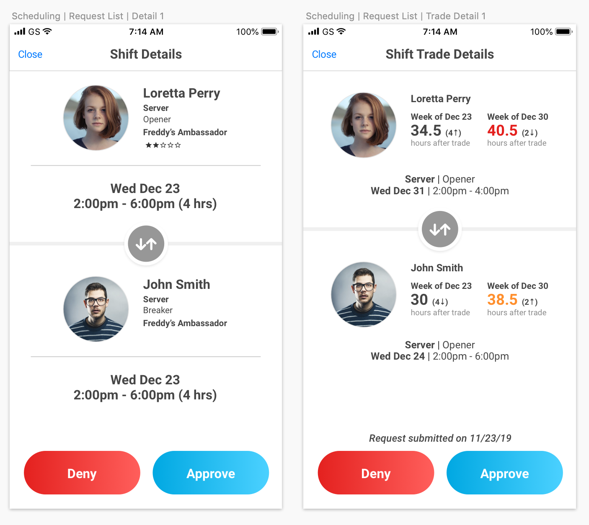
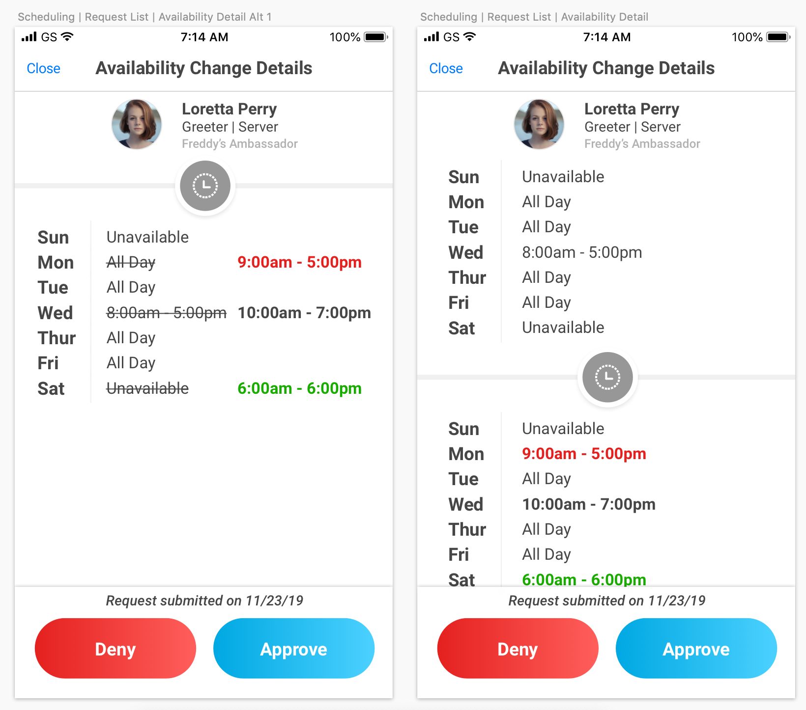

While a restaurant manager could handle most of their scheduling duties on R365's web application, our team understood that a manager couldn't spend their entire day in front of a desktop computer. Our next mission was to develop a mobile application to allow them to accomplish scheduling-related tasks while on the go. The mobile app would be where restaurant managers approved/denied employee requests, addressed conflicts, and viewed upcoming schedules, as well as identify the effects of changes to an employee's schedule.
Objective:
Provide a seamless experience across web and mobile for restaurant managers, providing context to decisions that need to be made.
Process
Since we had garnered so much information from our web scheduling interviews, most of my time on this project was focused on the user interface.
The product owner stressed that managers should be freed to be in the front of house as much as possible, since they were unable to interact with customers in the back office. We understood manager priorities to be the following: identifying when overtime hours would be triggered (in an effort to avoid such instances), retaining authority over scheduling, and keeping employees informed of any changes to their schedule. My goal was to surface only metrics relevant to these priorities, in a way that would be accessible and actionable.
Design-wise, I started with our Shift Offer process since it was the most complex of the requests. We thought there might be a need to view each of the employees' schedules.
Design critique. Helped to have a second pair of eyes on it. Lead UX Designer helped steer. Later on, I spent a good amount of time coordinating with our mobile development team, fine-tuning the design and ensuring consistency between our Android and iOS applications.
Design
The next step in my process was synthesizing what we knew about our users' experience.
Our bigger clients were interested in getting all of their locations onto the scheduling platform for oversight. However, they took a more laissez-faire approach to enforcing this. Only a few locations were using our "time off requests" feature. Other GMs preferred to track time off requests with Google Docs.
I moved on to the Requests List, a summary view of the requests submitted by all employees belonging to that restaurant location. I wanted a safeguard against accidental approvals/denials, so I restricted action to the detailed request pages. Managers could not take any actions on the list view. They would see only vital information for each request - the request type, the employee who had submitted the request, the date/time of request, and the request's status.
Changing the process of Shift Claims. Change verbiage of "Claim Shift" -> Request Shift, on the employee side. A clunky and painful experience for managers because then they had to put in the legwork to find a replacement for the employee who was attempting to drop a shift. We decided to streamline this process by not passing the request along to a manager until at least one employee had attempted to claim the shift. It required more communication between manager and employee, and might lead to bias as managers might be more helpful to certain employees over others. Reducing the potential points of failure in this process required minimizing these interactions.
An early iteration of Request List showed approved and denied requests in the same list as pending requests
Filters for Request List were an important one on my list. A manager might have access to multiple locations' requests, or they might only want to view request from a certain time period.
The first and last drafts of my Filters page
I wanted to display requests details pages so they were easy to read.
An earlier version of the Time Off Request Detail screen had used the header "Other Staff Time Off", which was not as specific and implied that it was all staff from that location. We wanted to make it clear that only the employees who shared job codes with the original requesting employee would be listed here, so it was changed to "Similar Time Off Requests".

They say to pick your battles, and this was one of the ones I chose to advocate for. The product owner wanted to include labels like "original hours" and "net change resulting hours", which were highly descriptive but not at all colloquial. I opted to drop the technical labels.
The details of the specific shifts being traded were of secondary concern, so I treated them accordingly in my design.
We removed the star rating since the product owner admitted it was a 'nice to have' and that some restaurants might not use the rating system at all.
Archived views and how to indicate original schedule compared to the requested one. Ended up displaying them above and below, instead of side by side. Archived view was also not possible to display the previous schedule, so we only displayed the approved one (or that the request had been denied).

Indicating the 'before' and 'after' states. I hadn't wanted to make the schedule redundant and only indicate the changed times, but limited horizontal real estate so I chose to display them vertically. Color to indicate differences in an employee's schedule, whether more hours of availability (green) or less (red).
Implementation
I worked closely with the mobile development team for this project in order to fully understand our capabilities and restrictions from a back-end point of view. For example, some of the features the product manager and I wanted to implement would have required too heavy of a lift from our backlogged back-end team, so we came up with a workaround or chose not to display those items in the sections it would most affect.
[screenshot of requests already submitted by employee; Complicated for the back-end without creating more fields in the database, so we chose to forego the number on the archived views.]
We had to reconsider one of our existing processes, as it was troubling some clients. Shift Drop was difficult for certain restaurants because it meant their employees would not take ownership of shifts originally assigned to them. SHIFT BIDDING - used to be shift drop
Change is always difficult. Recognizing this, we empowered our customer success department with internal learning guidelines, including an in-app walkthrough of the new features. We hoped this would alleviate some of the pains normally associated with onboarding. Providing this quick-start guide as documentation for our end users as well as our internal support folks would help restaurant managers get the most value out of the new application.
Validation
Reflection
Details
ContextOperations project for R365, for restaurants to optimize their labor spend and streamline the scheduling process